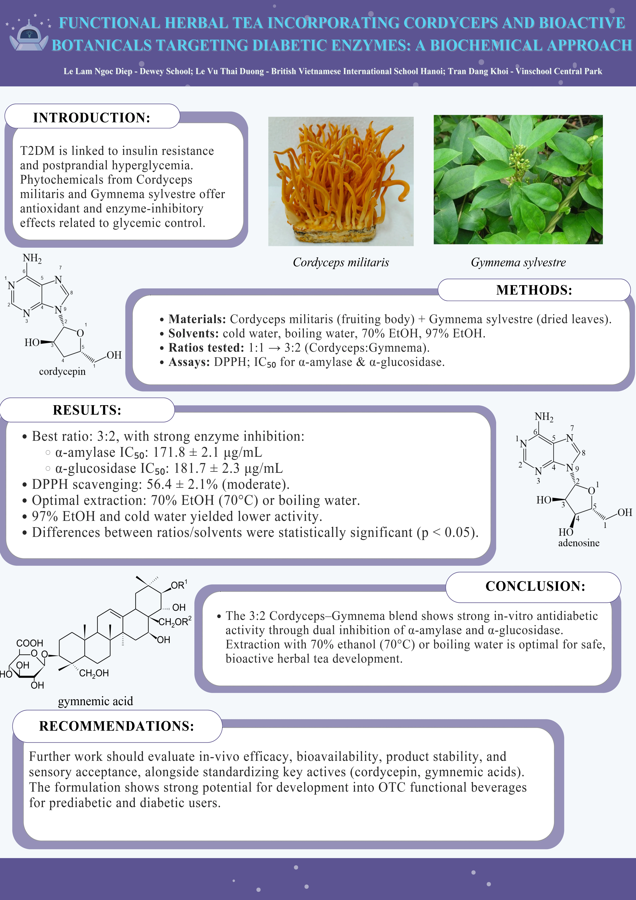

Functional Herbal Tea Targeting Diabetes-Related Enzymes
Biochemical screening of Cordyceps militaris and Gymnema sylvestre extracts for antioxidant and carbohydrate-digesting enzyme inhibitory activity.
Research poster
Explore the study design, experimental results, and proposed next steps in the original project poster.

View full research poster (PDF) ↗
Research question
Can a blend of Cordyceps militaris and Gymnema sylvestre be developed into a functional herbal tea with measurable antioxidant activity and inhibition of carbohydrate-digesting enzymes relevant to type 2 diabetes?
Experimental approach
As a research co-author (November 2025–January 2026), I contributed to biochemical screening of Cordyceps militaris and Gymnema sylvestre formulations. We prepared extracts using water and ethanol (70% and 97%), compared blending ratios, assessed antioxidant activity with the DPPH assay, and measured α-amylase and α-glucosidase inhibition using IC₅₀ values.
Key findings
- Optimal blend: A 3:2 ratio of Cordyceps to Gymnema produced the strongest enzyme inhibition among the ratios tested.
- α-amylase inhibition: IC₅₀ = 171.8 ± 2.1 µg/mL.
- α-glucosidase inhibition: IC₅₀ = 181.7 ± 2.3 µg/mL.
- Antioxidant screening: DPPH scavenging of 56.4 ± 2.1% was reported in the poster.
- Extraction conditions: 70% ethanol at 70 °C and boiling-water extraction at 100 °C were identified as favorable approaches, with comparable α-amylase inhibition (IC₅₀ approximately 161–162 µg/mL).
Significance and limitations
The results suggest that the botanical blend merits further investigation as a potential functional beverage. However, these are in-vitro biochemical findings: they do not establish that drinking the tea lowers blood glucose or treats diabetes in humans. Further studies would need to assess bioavailability, safety, formulation stability, sensory acceptability, and ultimately clinical outcomes.
Recognition
Gold Award · Kaohsiung International Invention & Design Expo (KIDE), 2025.
Research in action
Selected photographs from sample preparation, laboratory experimentation, and the project presentation.
← Back to research